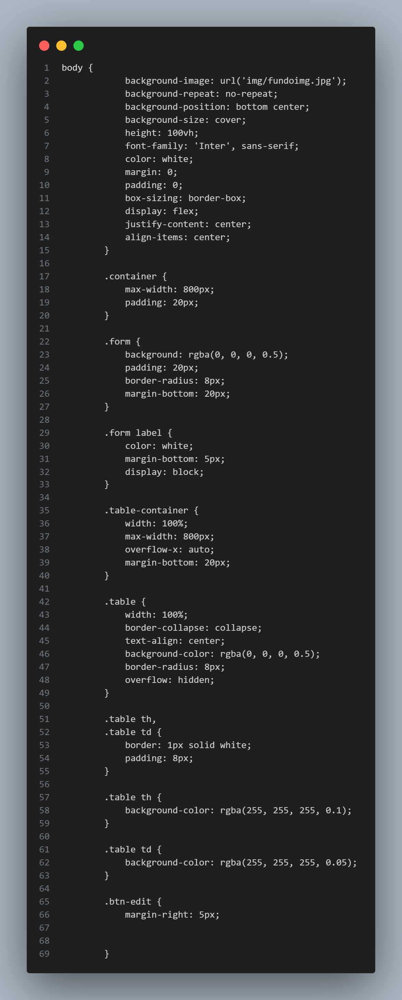

HTML
Estrutura do Código
• HTML: Define a estrutura da página.
• CSS: Estiliza a aparência da página.
• JavaScript: Implementa a lógica para interatividade (adicionar, editar e excluir).
Análise do Código
Estrutura HTML

Detalhamento
Na tags "head"
• Meta Tags: Definem a codificação de caracteres (UTF-8) e a responsividade da página.
• Título: Define o título que aparecerá na aba do navegador.
• Bootstrap: Uma biblioteca CSS que facilita a estilização. O link incluído fornece acesso à versão 4.1.3 do Bootstrap.Aqui para utilizar o Bootstrap
• Estilos personalizados: São definidos na tag "style", permitindo que você estilize elementos da página conforme necessário.
Na tags "body".
• Container: Um
Formulário de Cadastro
• Labels e Inputs: Cada campo do formulário (Nome, Matrícula e Turma) é definido com um rótulo e um campo de entrada ("input").
Botões
• Cadastrar: Chama a função cadastrar() para adicionar um novo item.
• Salvar Edição: Chama a função salvarEdicao() e inicialmente está oculto.
Tabela de Cadastro
• Tabela: Mostra os dados cadastrados com colunas para Id, Nome, Matrícula, Turma e Opções.
• tbody: Onde os dados serão dinamicamente inseridos.
CSS
• Corpo da Página: Define um fundo com uma imagem, texto branco e centraliza o conteúdo.
• Formulário: Tem um fundo levemente transparente, com bordas arredondadas.
• Tabela: Define a aparência da tabela e das células.
JavaScript
Variáveis
• dados: Array que armazena os itens cadastrados.
• proximoId: Mantém o controle do próximo ID a ser atribuído.
• itemEditando: Armazena o item que está sendo editado.
Funções
• cadastrar(): Coleta dados do formulário, cria um novo item e o adiciona ao array dados.
• listarDados(): Atualiza a tabela com os dados do array dados.
• editar(id): Carrega os dados do item selecionado para edição.
• salvarEdicao(): Salva as alterações feitas em um item existente.
• excluir(id): Remove um item do array dados e atualiza a tabela.
• limparCampos(): Limpa os campos do formulário após a operação de cadastro ou edição.
Conclusão
Esse código cria um sistema básico de cadastro que permite adicionar, editar e excluir registros de uma lista. A utilização do Bootstrap facilita a criação de uma interface responsiva e esteticamente agradável.